A test itinerary · read off one reel · checked 11 November 2026
Nick sent a 17-second Instagram reel and asked for an itinerary. The reel gives the route and the nights on eight caption cards, and shows about two dozen places in passing. This page turns that into fourteen days you could travel on, and marks every line by where it came from.
Written on the reel's caption cards: the eight places, the nights, which are day trips.
A place we identified from a clip. The time in the reel is given, and a small still is in the list further down.
Ours, not the reel's: the order within a day, extra sights, where the trip starts and ends, every train.
Show:
The reel's cards add up to eleven nights: 4 + 1 + 2 + 2 + 2. Its title says fourteen days. Both are right, and the difference is the flying.
The reel is an ad for the tour operator journaway, and the trip on its cards matches one package on journaway's UK site stop for stop: “Japan by train: 14 days of city hopping on the Shinkansen”, sold as “14 days” with “11 overnight stays”. On that page, read on 11 November 2026, day 1 is a night flight from the UK, day 2 is arrival in Tokyo, the eleven hotel nights fall on days 2 to 12, day 13 is the flight home from Osaka, and day 14 is headed “welcome home”.
This plan counts the same way, because that is the trip the reel is describing. Day 1 and Day 14 are in the air or at home, Day 2 and Day 13 are half-days, and there are ten full days on the ground. If you are not starting a long-haul night flight away, drop Day 1 and Day 14: it is then a 12-day trip with the same eleven nights. We did not add nights to reach fourteen, since that would no longer be the trip on the cards.
The operator's page says “night flight” only for the way out. That the way home also runs overnight is implied by its day 13 and day 14, not stated.
No hotel night. This is how the operator behind the reel counts to fourteen.
An overnight flight to Tokyo.Not in the reel. The operator’s own page makes day 1 a night flight from the UK; see the count above.
A half-day at best after a long flight.
Tokyo, 4 nights.
From the airport into town by train.From Narita: the Narita Express to Tokyo, Shinagawa, Shibuya or Shinjuku, or the Keisei Skyliner to Nippori and Ueno. From Haneda: the Tokyo Monorail to Hamamatsucho or the Keikyu line to Shinagawa. Details under the airport trains.
Nothing planned. Find the hotel, eat nearby, sleep.Jet lag is real and the next three days are full.
Two of the reel’s three Tokyo clips.
Senso-ji, Asakusa. The clip looks back from the main hall towards the Hozomon gate. reel 0:03Five minutes on foot from Asakusa Station (the temple’s access page).
Walk in the usual way: through the Kaminarimon gate and up the Nakamise shopping street to the hall.
Afternoon across the river or in Ueno, whichever is closer to where you are staying.
The 3D cat at Shinjuku’s east exit. A giant calico cat on the corner screen called Cross Shinjuku Vision; the reel has it after dark. reel 0:03The screen’s owner says it is seen from the plaza in front of the east exit (Cross Space). Whether the cat still plays every day in November 2026 we could not confirm.
One clip, and the day built round it.
Meiji Jingu and Harajuku in the morning, Shibuya and its crossing in the afternoon.First-timer staples, none of them in the reel.
The corner outside Shiinamachi Station, Toshima. The reel’s third Tokyo clip: a small izakaya under two rooftop signs at dusk, seen from above. reel 0:04Not a sight, just an ordinary station street, which is why it is in the reel. Shiinamachi is on the Seibu Ikebukuro Line, one stop out from Ikebukuro. We placed it from the signs; where the camera stands we do not know. Go for an evening away from the crowds, or skip it.
The cards give Tokyo four nights and the reel shows three places. This day is yours.
Whatever Tokyo you came for: museums in Ueno, Akihabara, a market breakfast, or a day out of town.The operator’s page leaves its Tokyo days open too.
Pack a small bag for the next night.Kanazawa is one night. Tomorrow has a morning train and an afternoon on foot.
One night means this afternoon and tomorrow morning are all Kanazawa gets. Take a morning train.
Train: Hokuriku Shinkansen, Tokyo to Kanazawa, direct. About 2½ hours on a Kagayaki (reserved seats only), about 3 on a Hakutaka. Details and sources.
Kanazawa, 1 night.
Use the Kanazawa Loop Bus from the station’s East Gate. The Right Loop reaches the teahouse districts first, then Kenrokuen, then the samurai district.Every 15 minutes by day (Visit Kanazawa). The same page gives the walks: Kenrokuen to Higashi Chaya about 20 minutes, Kenrokuen to Nagamachi about 15.
Kazue-machi teahouse district: a red-walled lane with a flight of steps coming down into it. It matches Kuragari-zaka, the steps into Kazue-machi. reel 0:06 likely, not certainThe small, quiet teahouse district on the Asano River (Visit Kanazawa).
Higashi Chaya, the largest teahouse district, is a short walk across the river from Kazue-machi. See both.
Kenrokuen. The clip is a path beside the Miyoshian teahouse; its hanging sign can be read in the frame. reel 0:05Miyoshian is a teahouse and restaurant inside the garden, on the bank of Hisago-ike pond (its own site).
A Kanazawa morning, a two-train journey, a Kyoto evening.
Train: Hokuriku Shinkansen to Tsuruga, change there to the Thunderbird limited express for Kyoto. About 1¾ to 2 hours in all. There has been no through train since March 2024. Details and sources.
A garden seen from a veranda. It matches the garden of the Nomura samurai residence in Nagamachi. reel 0:04 likely, not certainAbout five minutes on foot from the Korinbo bus stop (Visit Kanazawa).
Walk the earthen-walled lanes of Nagamachi around it before the train.
Kyoto, 2 nights.
Fushimi Inari Taisha, the tunnel of red torii gates. reel 0:06Right beside Inari Station, two stops and five minutes from Kyoto Station on the JR Nara Line (the shrine’s access page). We put it on the arrival afternoon because it is the one Kyoto clip close to the station.
Evening around Gion and the river.
The reel shows four Kyoto places; the cards give Kyoto one full day and two part-days. They do not all fit comfortably. Three are in the plan and the fourth is a swap.
Yasaka Pagoda, up the lane in Higashiyama. This is the reel’s title shot, with the street empty and the light low. reel 0:00The pagoda of Hokan-ji, between Kiyomizu-dera and Yasaka Shrine (Kyoto City). Go at dawn, as the reel seems to have: the lane is not empty later. The nearest bus stop we could not confirm.
Carry on through the Higashiyama lanes to Kiyomizu-dera while it is still early.
Otagi Nenbutsu-ji, the temple with 1,200 stone rakan figures, at the far end of Arashiyama. reel 0:07 likely, not certainClosed on Wednesdays and Saturdays (the temple’s page). A bus from Arashiyama, roughly hourly, or a short taxi ride. What it costs in travel.
From Otagi, walk downhill through the Saga-Toriimoto street to the bamboo grove and Togetsukyo Bridge.This is the order the temple itself recommends, and the operator’s page also gives its full Kyoto day to Arashiyama.
Kifune Shrine, the stone steps lined with red lanterns, in the hills north of the city. reel 0:07A swap, not an extra. About an hour each way from Kyoto Station before any waiting. Do it instead of Arashiyama, or on the arrival afternoon instead of an unhurried Fushimi Inari. What it costs in travel.
Two Shinkansen rides with a castle between them. Leave Kyoto early.
Trains: Kyoto to Himeji direct in about 45 to 55 minutes, then Himeji to Hiroshima in about an hour. Not every train stops at Himeji. Kyoto to Himeji · Himeji to Hiroshima.
Himeji: “Pit stop on route to…”
Leave your bags in the coin lockers at Himeji Station.There are three banks of lockers around the station (Visit Himeji), and the castle asks that wheeled bags go in a locker (its FAQ).
Himeji Castle. reel 0:08A 20-minute walk straight up the main street from the station, or a bus to Otemon-mae and five minutes on foot (the castle’s site). The clip sees the castle over a flower bed; from where, we could not place.
A stone torii in front of a low tiled building. reel 0:08 not placedWe could not place this one. It is not Himeji Shrine or Senhime Tenmangu, the two we compared it with.
Koko-en, the garden beside the castle, if there is time before the train.
Hiroshima, 2 nights.
Peace Memorial Park: the Cenotaph for the A-bomb Victims, with the A-Bomb Dome seen through its arch. reel 0:10We put it on the arrival evening: the park is open ground and quiet at dusk. The tram stop is Genbaku Dome-mae (Hiroden).
The day trip on the cards. Go early; come back for the castle in the late light.
Train and ferry: JR Sanyo Line from Hiroshima Station to Miyajimaguchi, 25 to 30 minutes; a five-minute walk; then a ten-minute ferry. Details and sources.
Miyajima: “Day trip from Hiroshima”.
On the way over, take a JR ferry leaving Miyajimaguchi between 9:10 and 16:10 and stand on the right.Those sailings pass closest to the great torii (JR West Miyajima Ferry).
Itsukushima Shrine and its torii, standing in the water. The reel has the tide in. reel 0:12About ten minutes on foot from the pier (JNTO).
A great open timber hall above the shrine. It matches Senjokaku, the “hall of a thousand mats”. reel 0:11 likely, not certainAlso called Hokoku Shrine, on the small hill beside Itsukushima Shrine (Miyajima Tourist Association).
Stone figures in red knitted caps. They match the 500 rakan statues at Daisho-in. reel 0:12 likely, not certainThe statues line the steps up to the temple (Miyajima’s official site). It is the furthest of the three from the pier: the temple says about 30 minutes on foot.
Deer on the shore, with a ferry behind. reel 0:13They are along the waterfront between the pier and the shrine.
Hiroshima Castle, back in the city. reel 0:11From outside only. The keep closed to visitors on 22 March 2026 because of its age; the city says the exterior can still be seen (Hiroshima City). The reel’s clip is an exterior in warm evening light, which is why it sits here.
A morning in Hiroshima, a train before lunch, and the reel’s most out-of-the-way clip in the afternoon.
Train: Sanyo Shinkansen from Hiroshima to Shin-Osaka, about 80 to 85 minutes. Shin-Osaka is not the city centre. Details and sources.
The Peace Memorial Museum first thing, before the train.Not in the reel. Added because it is where the park’s story is told.
Osaka, 2 nights.
Katsuo-ji, the temple of the daruma dolls, in the hills at Minoh north of Osaka. reel 0:14Half a day. About 26 minutes by train from Umeda and about 20 by bus, with the last bus up in mid-afternoon on the timetable we could read. What it costs in travel. If this afternoon is too tight, do it tomorrow instead of Nara: the operator’s own day 12 is a choice between Osaka and Nara.
Dotonbori in the evening: the crab, the octopus and the signs. reel 0:15Right outside Namba Station (Osaka Info).
The day trip on the cards, and the last full day.
Train: Kintetsu from Osaka-Namba to Kintetsu-Nara in about 40 minutes, or the JR Yamatoji Rapid from Osaka Station in about 50. Details and sources.
Nara: “Day trip from Osaka”.
Deer on the lawns of Nara Park. reel 0:15Five minutes on foot from Kintetsu-Nara Station, about 20 from JR Nara (japan-guide).
Todai-ji and its Great Buddha, on the way through the park.About 20 minutes on foot from Kintetsu-Nara by the temple’s own count (Todai-ji).
Moss-topped stone lanterns with a fawn among them. They match the approach to Kasuga Taisha. reel 0:16 likely, not certainAbout 25 minutes on foot from Kintetsu-Nara (the shrine).
A soft-serve stall with a deer waiting at the counter. reel 0:17 not placedSomewhere in the park; we could not place it.
Shinsekai after dark: the gold Billiken figure in front of the kushikatsu restaurant Yokozuna. reel 0:14Next to Ebisucho Station, or three minutes from Dobutsuen-mae (Osaka Info). The reel has it at night, so we put it on the last evening.
A half-day. No hotel night.
Train to Kansai International Airport: the JR Haruka from Shin-Osaka, Osaka or Tennoji, or the Nankai rapi:t from Namba.Details under the airport trains. The operator’s package flies into Tokyo and home from Osaka, which is why the route never doubles back.
If the flight is late in the day, this morning is the fallback for anything Osaka did not get.
The fourteenth day of the title.
Home.Counted as a day by the operator, so counted here.
Added by us; the reel shows neither airport. The operator’s package flies into Tokyo and out of Osaka.
Checked 11 November 2026 on: Narita Airport: trains · japan-guide: Narita Airport · Keisei: Skyliner · Tokyo Monorail · Haneda Airport: trains · JR West: Haruka · JR West: Haruka timetable as of 14 March 2026 (PDF) · Nankai: rapi:t
One train, no change: the Hokuriku Shinkansen from Tokyo Station to Kanazawa. Ueno and Omiya are boarding stations too, though one early Kagayaki skips Ueno.
Checked 11 November 2026 on: JR West: Hokuriku Shinkansen timetable, 23 Oct 2026 to 28 Feb 2027 · JR West: trains with all reserved seats (PDF) · Visit Kanazawa: getting to Kanazawa · japan-guide: Kanazawa access · japan-guide: Hokuriku Shinkansen
Two trains. The Hokuriku Shinkansen was extended from Kanazawa to Tsuruga on 16 March 2024, and since then the Thunderbird limited express from Kyoto and Osaka ends at Tsuruga instead of Kanazawa. So: Shinkansen from Kanazawa to Tsuruga, change, Thunderbird from Tsuruga to Kyoto.
Checked 11 November 2026 on: JR West: notice on the 16 March 2024 opening (PDF) · JR West: transfers at Tsuruga Station · JR West: Hokuriku Shinkansen timetable, 23 Oct 2026 to 28 Feb 2027 · JR West: trains with all reserved seats (PDF) · Visit Kanazawa: the change at Tsuruga · japan-guide: Kanazawa access · journaway: the package page
Direct by Shinkansen, but check that your train stops at Himeji. On the timetable, two trains an hour run from Kyoto to Himeji without a change: the Nozomi bound for Hiroshima and the Hikari bound for Okayama. The Nozomi bound for Hakata that we checked run through Himeji without stopping.
Checked 11 November 2026 on: JR Central: westbound Shinkansen timetable from 14 March 2026 (PDF) · JR West: Sanyo Shinkansen timetable, 23 Oct 2026 to 28 Feb 2027 · Visit Himeji: access · japan-guide: Himeji access · Himeji Castle: official site · JR West: oversized baggage
One Nozomi an hour runs direct from Himeji to Hiroshima in a little under an hour. Some Sakura trains also stop at Himeji and run direct, but in the early and middle afternoon the Sakura we checked pass Himeji.
Checked 11 November 2026 on: JR Central: westbound Shinkansen timetable from 14 March 2026 (PDF) · JR West: Sanyo Shinkansen timetable, 23 Oct 2026 to 28 Feb 2027 · Visit Himeji: access · japan-guide: Himeji access
From Hiroshima Station take the JR Sanyo Line towards Iwakuni and get off at Miyajimaguchi. The ferry terminal is about five minutes’ walk through an underpass. Two companies cross from the same pier in about ten minutes: JR West Miyajima Ferry and Miyajima Matsudai Kisen.
Checked 11 November 2026 on: JR West Miyajima Ferry: access · JR West Miyajima Ferry: timetable · JR West Miyajima Ferry · Miyajima Tourist Association: access · Hatsukaichi City: Miyajima visitor tax (Japanese) · Miyajima Matsudai Kisen: access · JNTO: Itsukushima Shrine · Daisho-in: access (Japanese) · japan-guide: Miyajima access · japan-guide: Daisho-in
Sanyo Shinkansen, direct, on a Nozomi, Mizuho or Sakura. On the timetable the ride works out at 81 to 86 minutes.
Checked 11 November 2026 on: JR Central: eastbound Shinkansen timetable from 14 March 2026 (PDF) · japan-guide: Hiroshima access · japan-guide: Osaka access · Osaka Metro: station list
Two railways, two Nara stations. Kintetsu runs direct from Osaka-Namba to Kintetsu-Nara in about 40 minutes. JR’s Yamatoji Rapid runs direct to JR Nara in about 50 minutes from Osaka Station, or 36 from Tennoji.
Checked 11 November 2026 on: Nara City Tourism Association: access · japan-guide: Nara Park · Todai-ji: access · Kasuga Taisha: basic information · journaway: the package page
The operator’s package includes a 7-day Japan Rail Pass and tells customers to start it on the first Shinkansen day, which is Day 6 here; seven days from Day 6 runs to Day 12. Whether a pass pays for itself on this route we have not worked out, and there are no prices on this page.
Checked 11 November 2026 on: journaway: the package page · Japan Rail Pass (JR Group): the Nozomi Mizuho ticket · JR Central: Nozomi seating · JR West Miyajima Ferry · JR West: Sanyo Shinkansen timetable, 23 Oct 2026 to 28 Feb 2027
Three of the reel’s clips are a real journey from the hotel. On a two-night stop that is a large share of the time, so here is what each one costs.
Four steps: JR Nara Line one stop to Tofukuji (about 3 minutes); the Keihan line north to its last stop, Demachiyanagi (10 to 16 minutes depending on the source); the Eizan Railway to Kibuneguchi (about 28 minutes); then Kyoto Bus 33 to the Kibune stop (4 to 7 minutes) and a five-minute walk. Without the bus it is about 30 minutes on foot up the valley road.
Checked 11 November 2026 on: Kifune Shrine: access · Kifune Shrine · Kyoto City: access to Kurama and Kibune · Keihan: the Eizan Railway
It is inside Kyoto, but at the far end of Arashiyama and uphill. Kyoto Bus routes 92 and 94 towards Kiyotaki stop at Otagidera-mae, right by the temple. The temple’s page calls a taxi the easiest way, and gives about an hour on foot from JR Saga-Arashiyama Station, mostly uphill.
Checked 11 November 2026 on: Otagi Nenbutsu-ji: access · Kyoto Bus: Otagi Nenbutsu-ji (Japanese) · Kyoto Bus: timetable at Hankyu Arashiyama (Japanese)
The temple is in the hills at Minoh, north of Osaka. Take the Midosuji subway line north; its trains run straight through onto the Kita-Osaka Kyuko line to the last stop, Minoh-Kayano, a station that opened on 23 March 2024. From there Hankyu Bus route 30 runs direct to the temple.
Checked 11 November 2026 on: Hankyu Bus: notice of 21 April 2025 (PDF, Japanese) · Minoh City: bus changes (Japanese) · Minoh City: the line extension (Japanese) · Osaka Info: Katsuo-ji · Katsuo-ji: access page, archived copy of 27 October 2025 (Japanese)
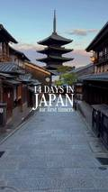
The five-storey pagoda of Hokan-ji at the top of a Higashiyama lane. An unmistakable view.
sure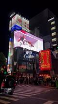
The cat on the corner screen, and “SHINJUKU” on the lantern sign below it.
sure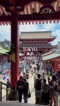
From the main hall looking back to the Hozomon gate.
sure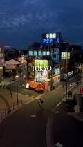
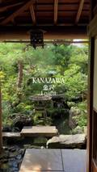
A garden from a veranda: the lantern, the stone bridge and the pond below match photographs of the Nomura house in Nagamachi. Nothing in the frame names it.
likely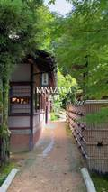
The hanging sign reads 三芳庵, Miyoshian, a teahouse inside the garden.
sure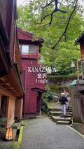
Red-walled houses and steps coming down beside a retaining wall: it matches photographs of the steps into the Kazue-machi teahouse district.
likely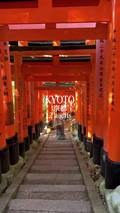
The path of torii gates.
sure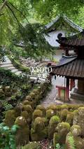
Mossy stone figures below a temple hall: both match photographs of this temple.
likely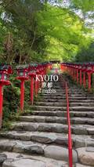
The stone steps between rows of red lanterns.
sure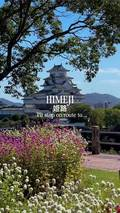
The castle is certain. The flower bed it is seen over, we could not place.
sure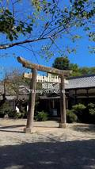
In front of a low tiled building. Compared with Himeji Shrine and Senhime Tenmangu: neither matches.
not placed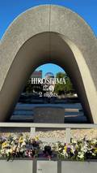
The arch of the Cenotaph for the A-bomb Victims with the A-Bomb Dome through it.
sure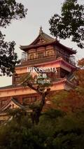
The keep, from outside.
sure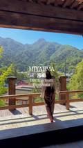
A broad timber veranda looking down on the shrine’s roofs: it matches photographs of Senjokaku and its position on the hill.
likely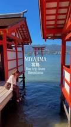
The shrine’s red corridors and the great torii in the water.
sure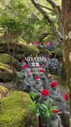
Rows of stone figures in red knitted caps: it matches photographs of Daisho-in.
likely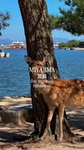
A deer under a pine with a ferry behind. The island is certain; the exact spot does not matter.
sureA shed stacked with daruma dolls marked 勝, “win”; the shed matches photographs of the temple.
sure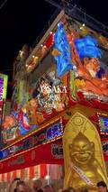
The gold Billiken figure under the signs of the kushikatsu restaurant Yokozuna (横綱).
sure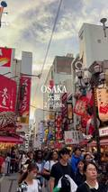
Signs for Osaka Ohsho, the giant crab and the red octopus.
sureDeer on a lawn. The park is certain; which lawn is not placed.
sure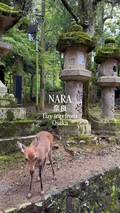
Moss-topped stone lanterns: it matches photographs of the approach to Kasuga Taisha.
likely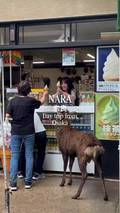
A deer waiting at the counter. Not placed.
not placedStills are from the reel by @thechaosdiaries (Alicia Cooper), shown at thumbnail size only to show how each place was identified. The reel itself is not hosted here.
This page is not connected to the creator or to journaway, and carries no discount codes or affiliate links.